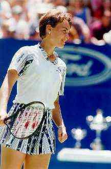
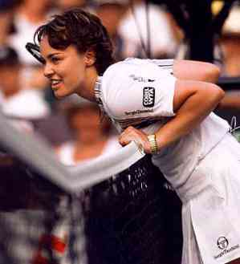
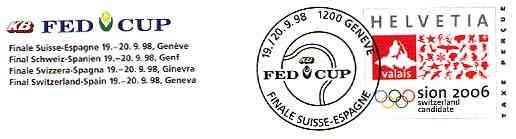
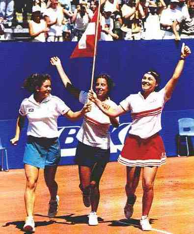

A Homage from Switzerland
With the game
won against Jana Novotna, Martina Hingis got her number one spot on the WTA list back the
2nd of February 1999. She took for the first time the number one position from the
renowned German tennis veteran Steffi Graf on March 31th 1997 (being at time 15 and a half
years old) and stayed on the #1 position for 80 weeks.
Martina was born on September 30, 1980 in Kosice, Slovakia (part of the
former Czechoslovakia). In the year 1988 she moved to Switzerland with her mother Melanie
Zogg (Molitor). She resides with her mother in Trubbach and Regensdorf, Switzerland and in
Roznov, Czech Republic.
Why am I writing about Miss Hingis at all? Simply I was and I still am
deeply impressed by the intelligence of her play, fascinated by her results as a single
and double player and especially by her joy to play and to win, a sentiment that she
spreads on the courts and everywhere she can be seen playing her preferred game. I am
charmed by her smile too, that's why I have dedicated this page to the professional tennis
player Martina Hingis, a true champion and The Smiling Princess of the world sport.
|
 |
 |
Let us see how is Martina Hingis perceived by the Web population:
Martina Hingis dominated women's tennis in 1997, winning three of the four major tournaments and replacing Steffi Graf as the world's top-ranked player. The latest teen sensation in women's tennis, Hingis was named after the legendary Martina Navratilova. Encyclopedia Britannica. http://www.eb.com
 |
Probably the most recognized feature that Martina possesses is her smile. Everyone who has seen her smile will visualize, when hearing the name Martina Hingis, the young lady with that gorgeous smile... It consists of a majestic touch that enlightens her whole face and makes her comparable to a goddess. Jan van Dam, Love Hingis member http://www.geocities.com/Colosseum/Sideline/9197/
Martina Hingis, the best tennis player of the generation. My favorite player, and one who I believe is a tennis legend in the making!
Martina Hingis is different. Firstly, she's twice as talented as most of the tennis players that exist at the moment. Also, a rather tough childhood in Slovakia helped her reach a level of mental toughness which belies her tender years. She is the youngest winner of a Grand Slam event and the youngest world No 1. http://homepages.infoseek.com/~hgturk/martina/sec.html
 |
|
A nice image of Martina Hingis, taken the 6/3/99, just before her memorable, lost final game against Steffi Graf at Rolland Garros, in France. This year she has won many tournaments, Australian Open included. She re-conquered her No. 1 position the 8/8/99 in San Diego, CA, USA. She stayed on the top position for already 101 weeks (the veteran S. Graf leads with 377 weeks on top, Martina taking the 5th place on the list). |
Background: Martina, after the match won against Venus Williams in San Diego, California, USA, the 8/9/99
Ayn Rand Bill Gates Bertrand Piccard Leonard Cohen J.W von Goethe

| Revised: 02/04/01. Copyright © 1999 - 2001 by Victor Manta, Switzerland. All rights reserved in all countries. |
|